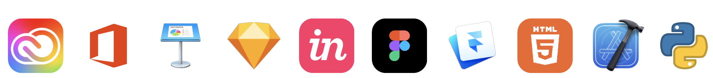

Education
YONSEI UNIVERSITY
(2017-2021)
Seoul, South Korea
College: Underwood International College
Degree: Bachelor of Science
Major: Information and Interactin Design
Graduation: 2021.3
Skills
Professional Skills
UX Research, User Interview, Survey, Usability Test; UI Design, Wireframing, Prototyping; Design Referencing, Presentation, Communication, Leadership.
Technical Skills
Adobe Creative Cloud: Photoshop, Illustrator, InDesign, XD, Premiere Pro, After Effects; Microsoft Office, Apple Keynote; Sketch App, Invision, Figma Framer Classic; HTML/ CSS, Python, Xcode SwiftUI (Enrty Level).
Language Skills
English and Chinese Bilingual, Korean (Communication Level).
Experiences and Activities
-
MUNE.CO
2018.1, Seoul, South KoreaUser Experience Research Intern
- Accomplished MUNE’s user research in the domestic market by connecting targeted customers.
- Product design research for syringe disposal machine. -
SK SUNNY PROGRAM
2020.3 - 2020.6, Incehon, South KoreaUser Experience Designer
- Collaborated with KIMU Art Studio to develop new business model.
- Leadership in User Experience Design of Web Design.
- Received a certificate for contribution. -
YONSEI UNIVERSITY GLOBAL CAREER TOUR
2019.6, Tokyo, JapanMember, Editorial Designer
- Delegated as a member of UIC Yonsei University to visit companies such as Hitachi, TOTO, Tiktok (Japan), etc.
- Directed and Created the editorial design for school publication, the Global Career Tour 2019 magazine. -
RAT RELAY GLOBAL COLLABORATION
2018.11, Incheon, South KoreaMember, UX Researcher
- Successfully completed topic research with teammates.
- Effectively established collaboration with design teams abroad.
- Received a certificate for contribution. -
INCHEON MANSU BOY’S HIGH SCHOOL
2017.9 - 2017.12, Incheon, South KoreaEnglish Language Coach, Voluntary Service
- Improved Students’ English communication ability.
- Supported students’ passion to study foreign languages.